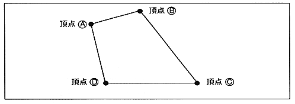
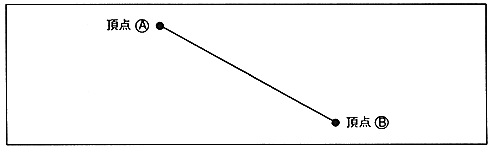

Return to previous page ｜ Return to menu ｜ Go to next page
-
● Polyline
- Draw a rectangle by connecting four straight lines. Specify four vertices and draw lines connecting the vertices in order. Unlike polygons, the plane surrounded by four points is not filled. Four points can be specified arbitrarily.
Specified in non-texture color.
】 Since four lines are drawn, pixels are written twice near the vertex where the lines overlap. For this reason, the results of color translucent processing are not guaranteed.
Figure 1.8 Polyline

-
● Line
- Draws a line in a single color between two points.
Specified in non-texture color.
Figure 1.9 Line

Return to previous page ｜ Return to menu ｜ Go to next page